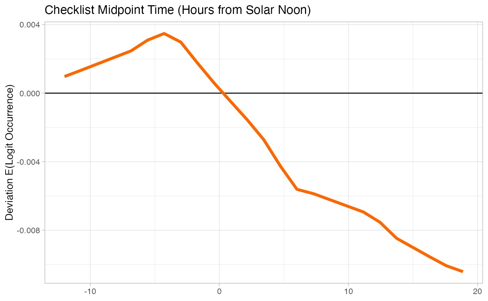

R/ebirdst-loading.R
load_pds.RdLoads the partial dependency data (from pd.txt), joins with stixel summary data, sets the names`, and cleans up the data.frame. This is one of the slower functions in the package, due to the size of the pd.txt file (usually multiple GB).
load_pds(path, return_sf = FALSE)
| path | character; full path to the directory containing single species eBird Status and Trends products. |
|---|---|
| return_sf | logical; whether to return an sf object of spatial points rather then the default data frame. |
data.frame containing partial dependency values for each stixel, as well as stixel summary information. To make these data more compact, they're stored in a wide format. Each row corresponds to the partial dependence relationship of one predictor for a single stixel. There are 50 columns (x1-x50) at which the partial dependence is measured and 50 columns (y1-y50) that give the resulting probability of occurrence on the logit scale.
#># load partial dependence pds <- load_pds(sp_path)# plot partial dependence for effort hours # define a spatiotemporal extent to plot data from bb_vec <- c(xmin = -86.6, xmax = -82.2, ymin = 41.5, ymax = 43.5) e <- ebirdst_extent(bb_vec, t = c("05-01", "05-31")) plot_pds(pds, "effort_hrs", ext = e)